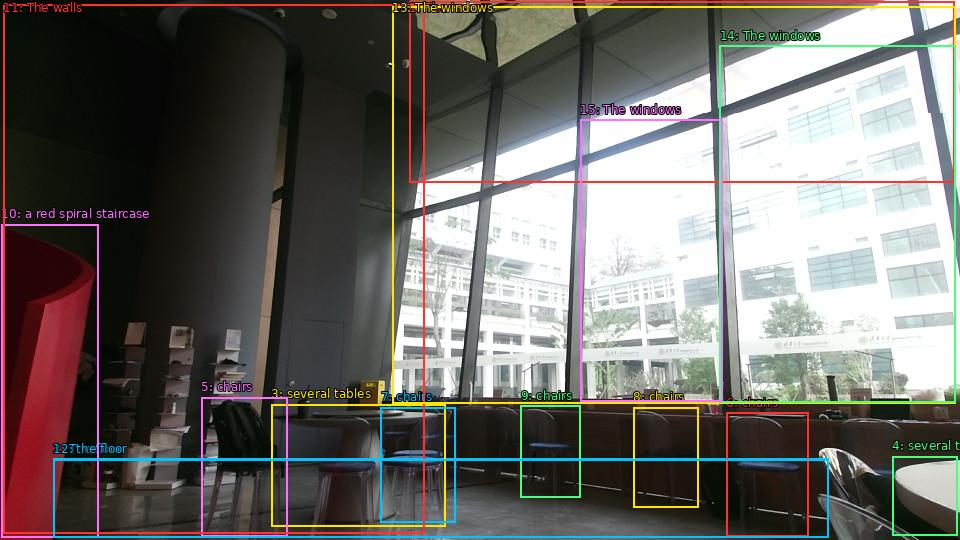

The image shows a modern office space with large windows that offer a view of the city. The room has a high ceiling with a skylight that allows natural light to enter the space. The floor is made of concrete and there are several tables and chairs arranged in a semi-circle around the room. On the left side of the image, there is a red spiral staircase leading to the second floor. The walls are painted in a dark color and the floor is covered with a light-colored carpet. The windows are large and let in plenty of natural light, creating a bright and airy atmosphere. Through the windows, one can see the buildings and trees outside.

Original · Caption raw · Grounding raw · Koordinate
Številke so lokalni ID regije. Dolge slikovne oznake so skrajšane; spodaj so celotne fraze. Napovedane regije se lahko prekrivajo ali opisujejo skupine.
| ID | Celotna fraza | bbox xyxy |
|---|---|---|
| 1 | The room | [409.44000244140625, 1.350000023841858, 954.719970703125, 182.79000854492188] |
| 2 | The floor | [53.279998779296875, 458.7300109863281, 828.0, 537.5700073242188] |
| 3 | several tables | [271.1999816894531, 404.19000244140625, 445.91998291015625, 526.2300415039062] |
| 4 | several tables | [892.3200073242188, 456.030029296875, 957.5999755859375, 535.9500122070312] |
| 5 | chairs | [201.1199951171875, 397.1700134277344, 287.5199890136719, 536.4900512695312] |
| 6 | chairs | [726.239990234375, 412.83001708984375, 808.7999877929688, 536.4900512695312] |
| 7 | chairs | [380.6399841308594, 407.4300231933594, 455.5199890136719, 522.9900512695312] |
| 8 | chairs | [633.1199951171875, 407.4300231933594, 698.3999633789062, 507.8700256347656] |
| 9 | chairs | [520.7999877929688, 405.8100280761719, 580.3200073242188, 497.07000732421875] |
| 10 | a red spiral staircase | [1.4399999380111694, 224.37001037597656, 98.4000015258789, 537.030029296875] |
| 11 | The walls | [3.359999895095825, 4.590000152587891, 424.79998779296875, 533.25] |
| 12 | the floor | [53.279998779296875, 459.27001953125, 828.0, 537.5700073242188] |
| 13 | The windows | [392.1600036621094, 6.210000038146973, 955.6799926757812, 403.6500244140625] |
| 14 | The windows | [719.5199584960938, 45.630001068115234, 955.6799926757812, 402.030029296875] |
| 15 | The windows | [580.3200073242188, 119.6100082397461, 722.3999633789062, 401.4900207519531] |